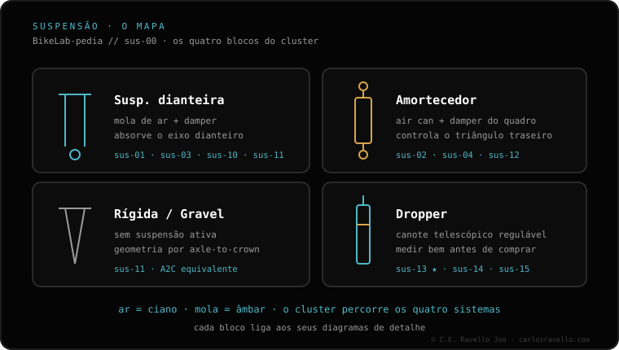

Início › BikeLab-pedia › Suspensão e canote
Cluster 07 · Suspensão e canote
Suspensão e canote
A suspensão está dura , batendo ou perdendo ar ? Não sabe qual garfo, amortecedor ou canote serve? Aqui está o setup, os problemas e a compatibilidade, resolvidos.

Suspensão e canote SAG da suspensão Comece aqui. O quanto afunda com seu peso: 15-20% garfo, 25-30% amortecedor. A base de todo ajuste. Setup · ajuste
Pressão de ar pelo peso A pressão inicial pelo peso e como afinar ao sag. Quantos tokens (volume spacers) Para não bater sem perder sensibilidade. Ajustar o rebote Nem pogo nem afundado: a velocidade de retorno, certa. Compressão alta e baixa (HSC/LSC) Velocidade da haste, não da bike. O que cada uma faz. Problemas
Garfo muito duro Não copia os buracos: o que mexer, em ordem, antes de uma revisão. Batendo no fim de curso Sem exagerar na pressão: pressão, token e compressão. Garfo perdendo ar Muitas vezes é a válvula, não os retentores. O que checar primeiro. Ar vs mola
Ar vs mola Leve e ajustável ou sensível e firme. Qual combina. Compatibilidade
Qual garfo serve As 5 medidas que precisam bater antes de comprar. Offset 44 vs 51 Como muda a direção e qual combina com você. Medida do amortecedor Eye-to-eye e stroke: como não errar o tamanho. Métrico vs trunnion Duas fixações diferentes: qual o seu quadro usa. Manutenção
De quanto em quanto revisar 50h/100h RockShox, 125h Fox. Não pule o das pernas. Compra
RockShox vs Fox Linhas equivalentes e cartuchos, sem marketing. Rígidas
Rígido vs suspensão Leve e sem manutenção ou controle no terreno ruim. Trocar para rígido Iguale o axle-to-crown ou muda a geometria. Canote retrátil
O que é um canote retrátil Abaixar o selim na hora: para quê e como funciona. Qual canote serve Diâmetro, curso e inserção: os 3 que decidem. Diâmetro 30.9/31.6/34.9 Como descobrir o seu e por que sobe mas não desce. Medir inserção e stack O curso que cabe de verdade, não o da caixa. Quanto curso de dropper O máximo que cabe no seu quadro e altura. Canote não sobe 80% é um parafuso, não o cartucho. O passo de 1 minuto. Canote afunda ao sentar O que falha e por que muitas vezes só se troca o cartucho. BikeLab-pedia · Clúster Suspensão e canote / Compatibilidade e padrões de bicicleta / Carlos Eduardo Ravello Joo · BikeLab Studio · Trujillo, Peru